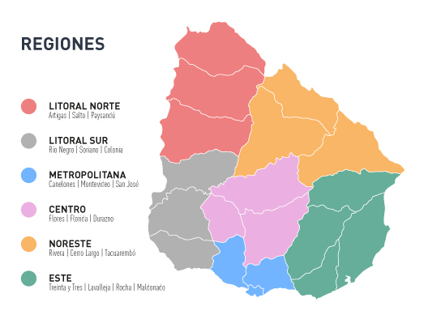

<div class="jumbotron" id="regionMainWrapper">
    <div>
        <h1 class="display-4">Regions</h1>
        <p class="lead">See Uruguay's main regions.</p>
        <hr class="my-4">
        <div class="jumbotron jumbotron-fluid"> 
            <div class="list-group align-items-center">
                <a>Región este</a>
                <a>Región litoral norte</a>
                <a>Región centro sur</a>
                <a>Región metropolitana</a>
                <a>Región corredor pájaros pintados</a>
            </div>
            <hr class="my-4">
            
        </div>

    
    </div>
</div>